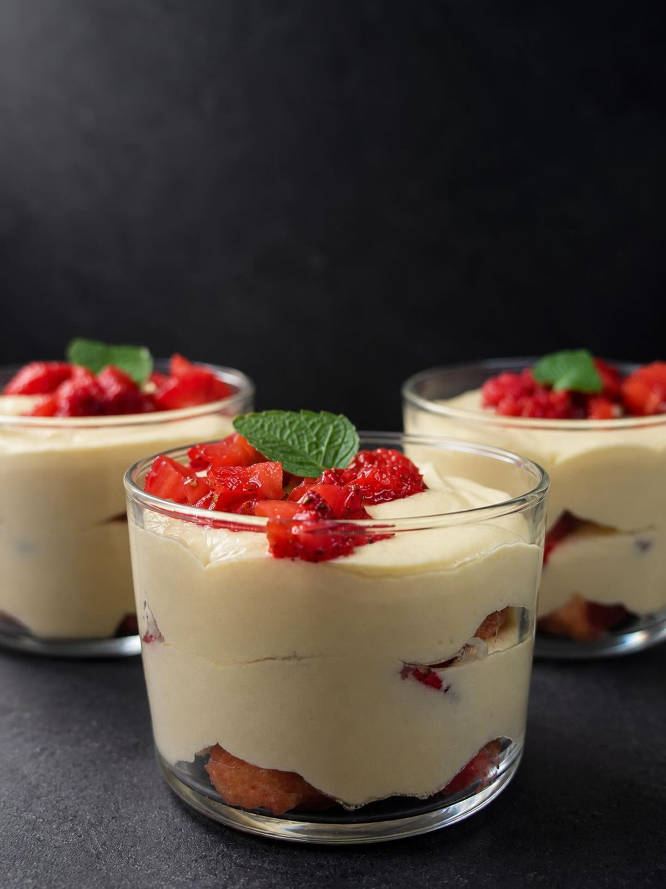
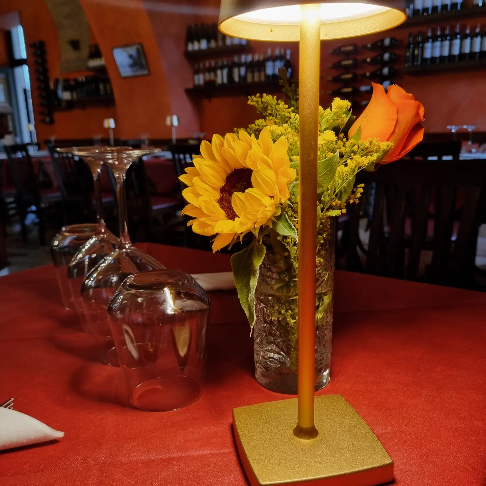
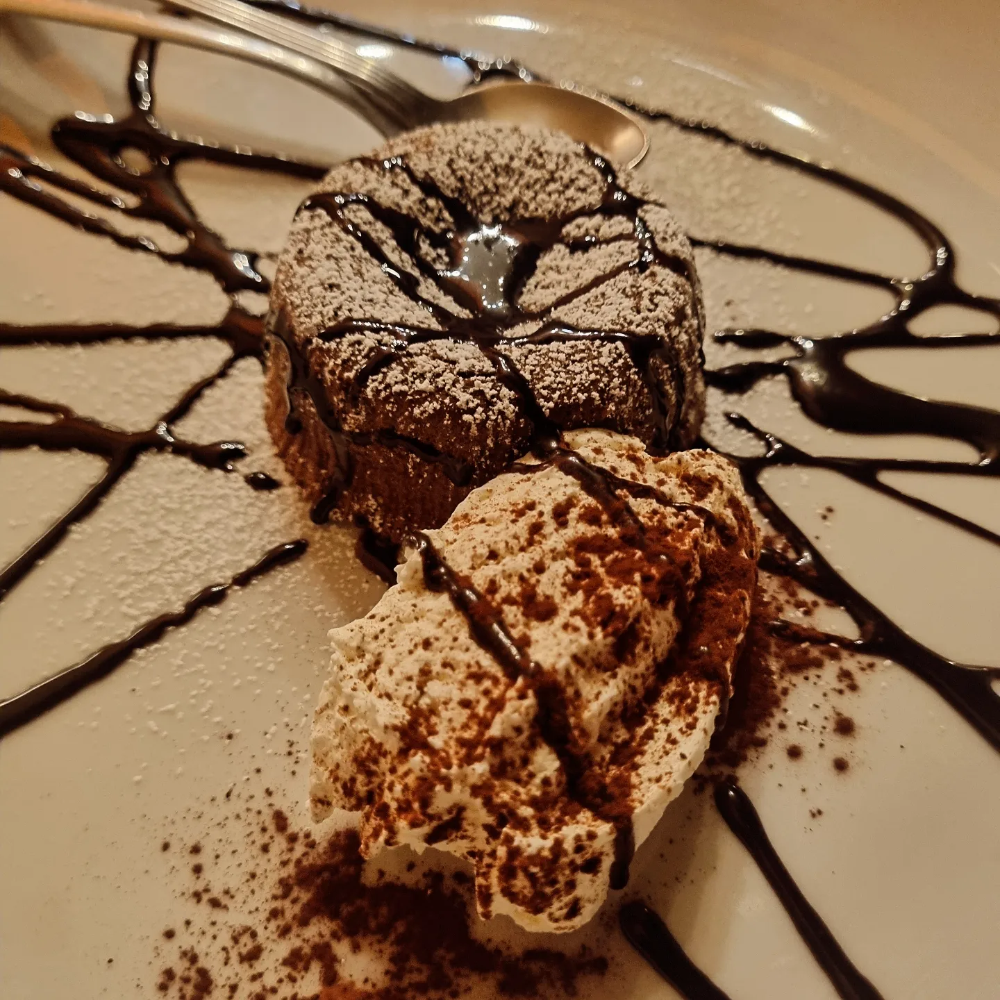
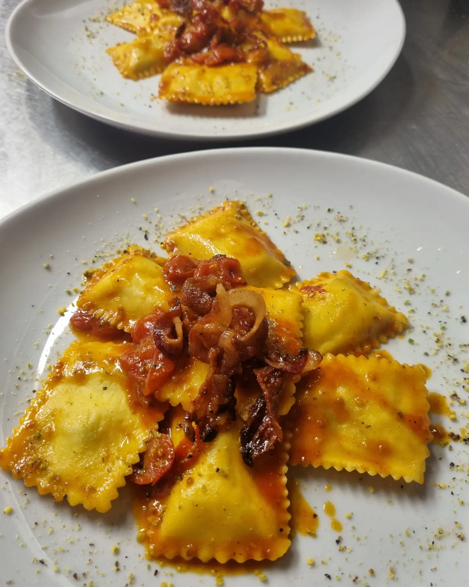
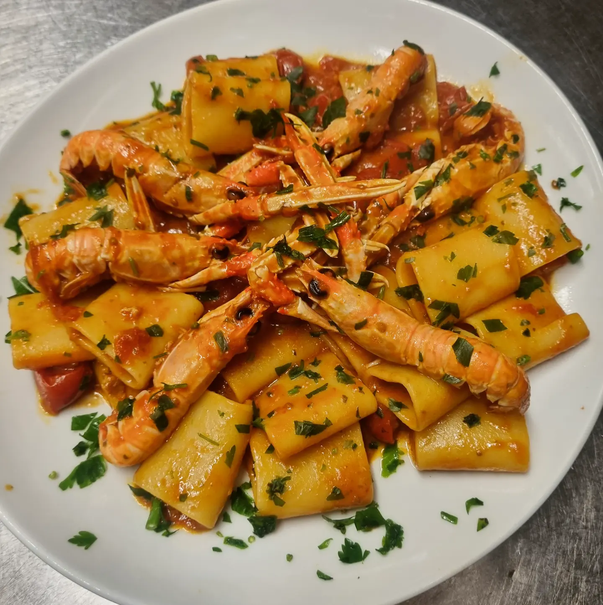

Caffetteria & Dolci
Il risveglio nel cuore di Fermo tra miscele selezionate, lievitati fragranti e dolci al cucchiaio fatti in casa.
Scopri di più →CAFFÈ & RISTORANTE
FERMO
Dall'aroma del primo espresso al mattino ai sapori autentici della cucina marchigiana di carne e pesce, fino ai cocktail d'autore sotto le volte storiche del centro.
SCOPRI IL MENULargo Calzecchi Onesti, 2 · Nel Cuore di Fermo
Il Capolinea Caffè & Ristorante nasce dallo spirito autentico dell'ospitalità marchigiana e lo reinterpreta in chiave contemporanea. Situato a pochi passi da Piazza del Popolo, è il punto di riferimento a Fermo per chi cerca un ambiente dinamico, elegante e caloroso in ogni momento della giornata.
Sotto il fascino delle storiche volte in mattoni a vista e nella luminosa veranda esterna, l'offerta gastronomica unisce colazioni artigianali, pranzi di lavoro o di piacere, aperitivi ricercati e cene dove la pasta fresca tirata a mano incontra il pescato dell'Adriatico e le migliori carni selezionate.
Eccellenza certificata dai nostri ospiti: tra i locali più apprezzati a Fermo su TripAdvisor per qualità della cucina e cortesia del servizio.


Il risveglio nel cuore di Fermo tra miscele selezionate, lievitati fragranti e dolci al cucchiaio fatti in casa.
Scopri di più →Sapori autentici di terra e di mare: dalla sfoglia tirata a mano ai crudi e alle grigliate di carne selezionata.
Scopri di più →
Calici delle migliori cantine marchigiane, cocktail d'autore e serate musicali in un'atmosfera vibrante.
Scopri di più →
Dall'aperitivo al dopocena, il Capolinea accompagna ogni piatto con una selezione curata delle migliori etichette del territorio — Podere Santa Lucia, Velenosi, Cantina d'Ercoli, Il Conte Villa Prandone e Cherri d'Acquaviva — insieme a Cocktail Dinner ed eventi esclusivi nel cuore di Fermo.
RICHIEDI DISPONIBILITÀ →Ogni portata al Capolinea nasce dal rispetto per la stagionalità e dalla ricerca dell'equilibrio visivo e gustativo: dalle tartare di scottona battute al coltello agli scampi e astici dell'Adriatico, fino alle polpette dorate servite sulle tradizionali ceramiche dipinte a mano.
"Un'esperienza che unisce il calore di casa all'eleganza del piatto."
Chi sceglie il Capolinea Caffè a Fermo racconta un luogo capace di sorprendere tanto per un cappuccino cremoso al mattino quanto per una cena romantica di pesce o carne: porzioni generose, presentazioni curate nei minimi dettagli e un'atmosfera sempre viva.

Dove siamo?
Comodo parcheggio nelle vicinanze, sala interna climatizzata sotto le volte storiche in mattoni e veranda esterna riscaldata.
APRI IN GOOGLE MAPSPunto di Riferimento a Fermo
Sfoglia & Pasta Fatta a Mano
Cantine Doc & Docg Marche
Colazione · Ristorante · Cocktail
Per pranzi, cene romantiche, aperitivi o per organizzare il tuo evento speciale nel centro storico di Fermo, contattaci telefonicamente o compila la richiesta rapida.
Largo T. Calzecchi Onesti, 2
63900 Fermo (FM)